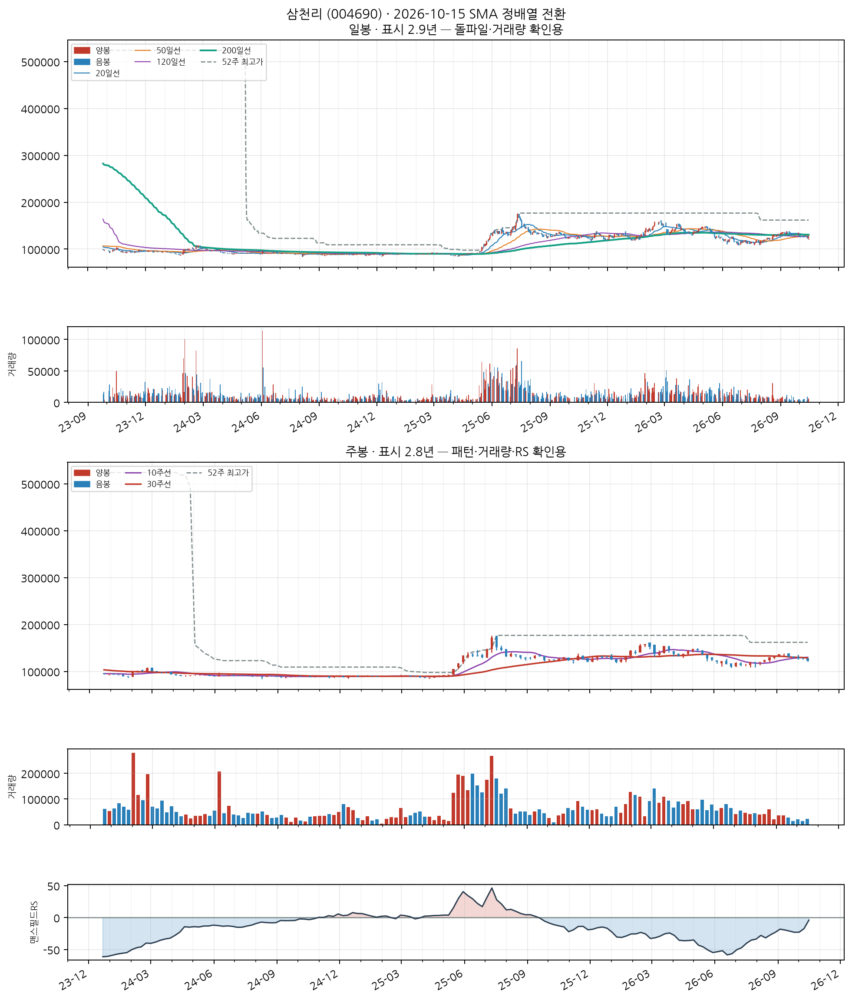
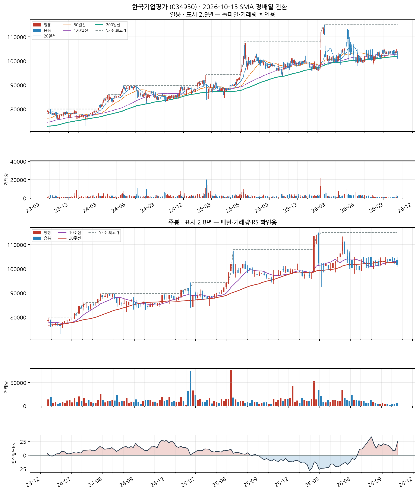
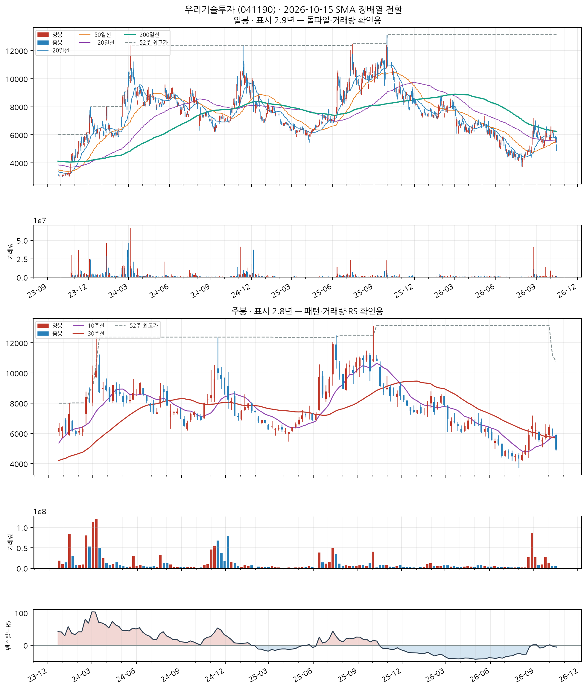
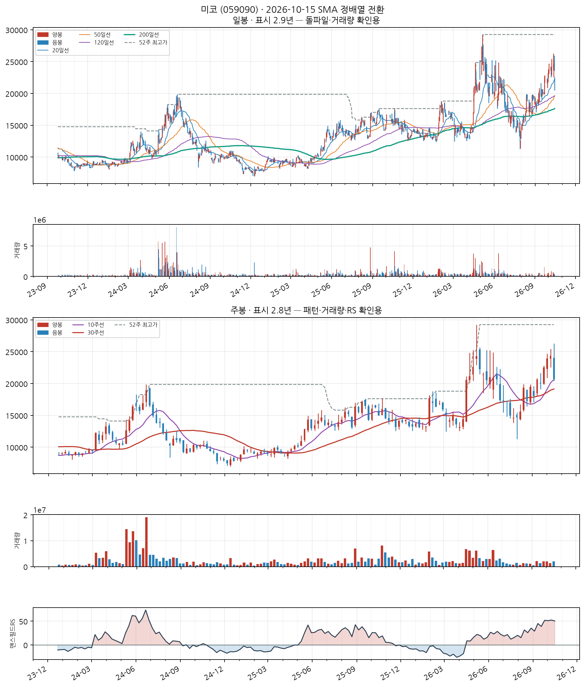
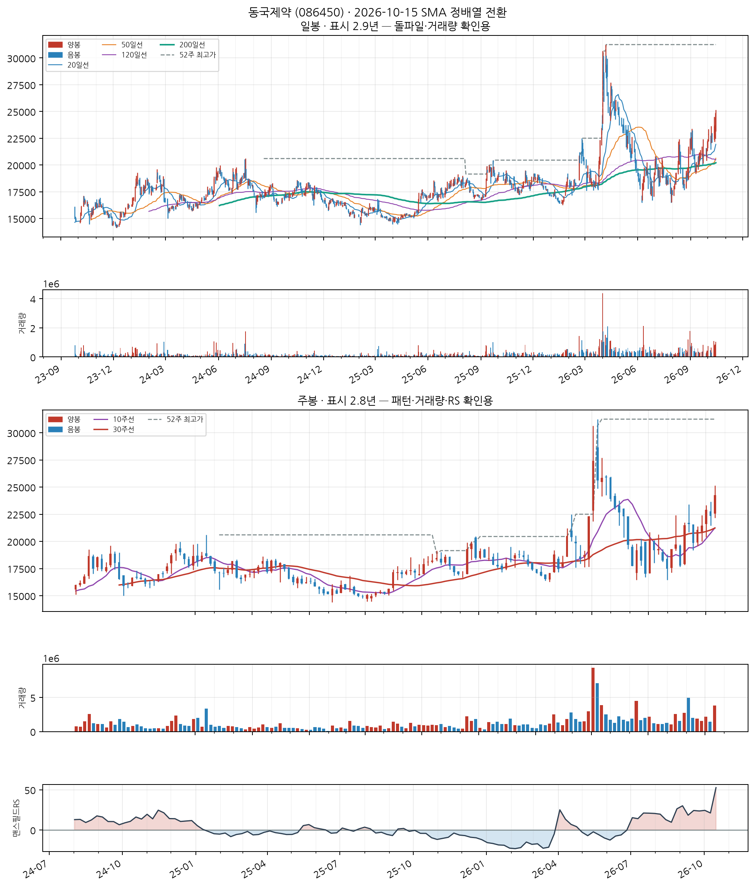
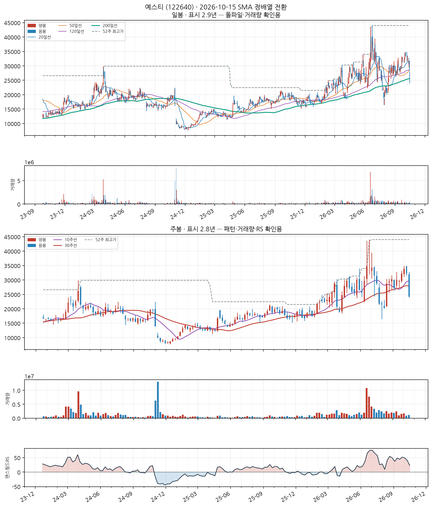
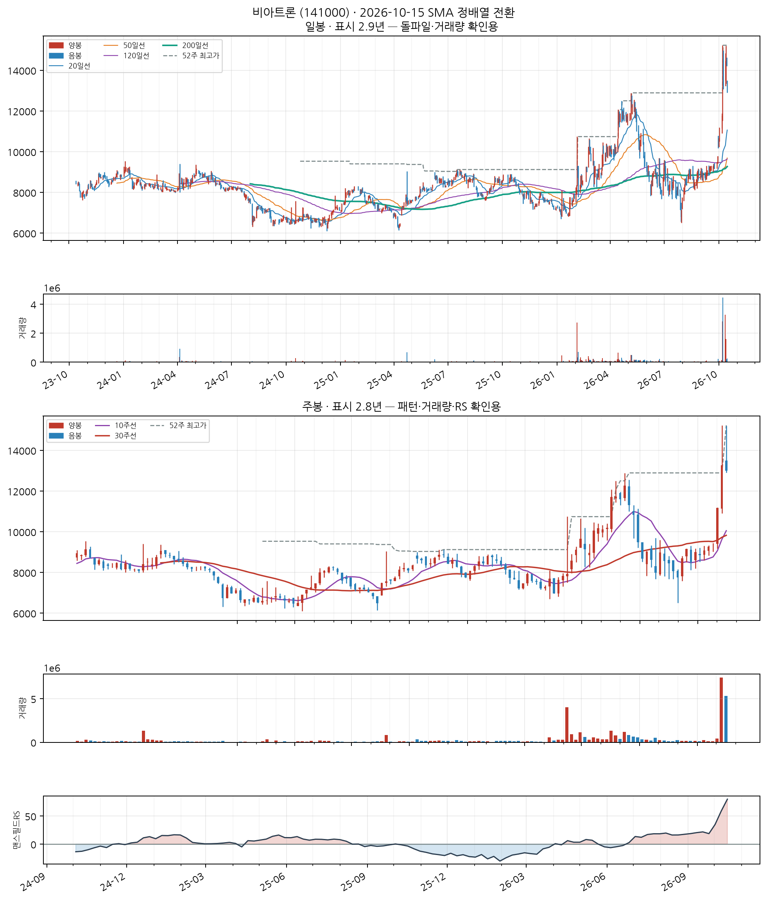
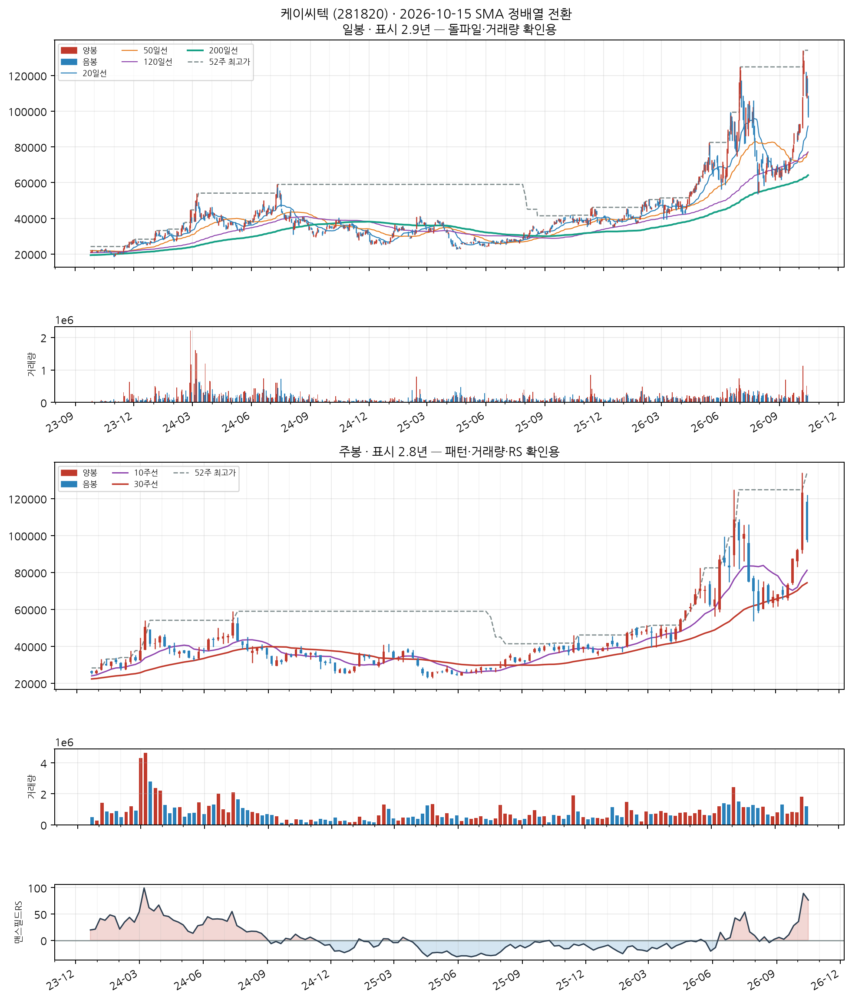
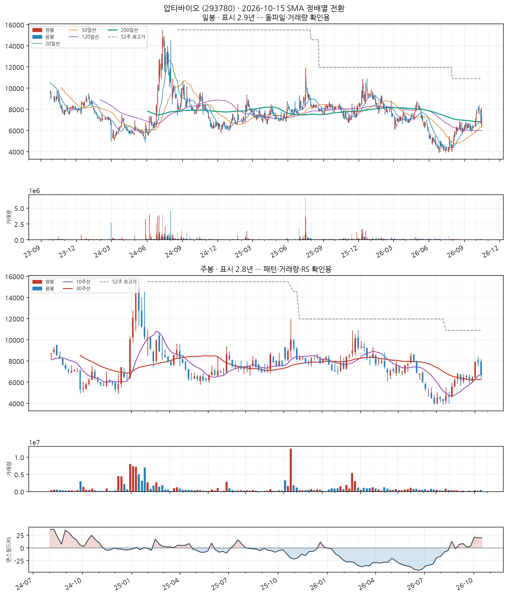
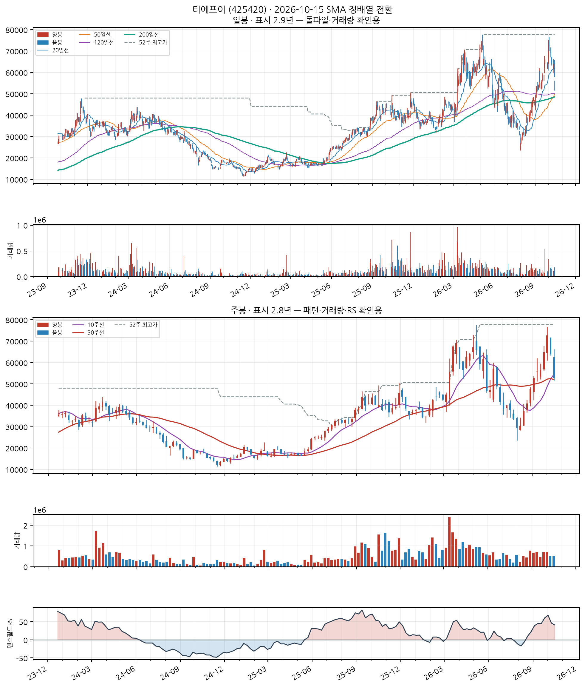

이 전략의 진입 조건
- SMA 정배열 성립 — 20일선 > 50일선 > 120일선 순서가 오늘 성립할 것
- 정배열이 최근에 시작 — 그 정배열이 시작된 지 10거래일 이내일 것 (이미 오래 정배열이던 종목은 제외 — '막 시작한 것'만 잡습니다)
자세히 — 한계와 주의사항
이 두 조건이 게이트 전부입니다. 나머지(거래량·모멘텀)는 순위를 매기는 점수일 뿐 통과 여부를 가르지 않습니다.
점수 = 신선도 + 거래량배수 + 모멘텀
· 신선도: 정배열이 시작된 지 얼마나 됐는지 (오늘 막 시작 = 1.0)
· 거래량배수: 오늘 거래량 ÷ 최근 평균 거래량 (최대 3배)
· 모멘텀: 정배열 시작일 종가 대비 오늘 종가 상승률 ÷ 10 (하락 중이면 0)
52주 신고가 스캐너와 목적이 반대입니다 — 그쪽은 이미 오래 오른 리더주를 계속 잡고, 이쪽은 이제 막 추세가 만들어진 종목만 잡습니다.
백테스트 파라미터(손절 −8%, 익절 +24% 등)는 52주 신고가 스캐너에서 그대로 가져온 값이고 Launch Pad 자체 데이터로 재튜닝한 적이 없습니다.
삼천리 (004690)
2일전 포착
KOSPI
연료용 가스 제조 및 배관공급업
업종 참고: RS 평균 56/99(업종 중 상위 47%) · 오늘 신호 1건 · 업종 평균이 코스피 대비 -9.2%p(126일), 종목별 편차 ±19%p
🧪 자체 섹터 분류(실험적, 참고용): 롯데렌탈·삼영무역 등 16종목 (업종 혼재)
섹터 내 RS 순위: 8/16위 (RS 73/99)
섹터 1~3위: 롯데렌탈(96), 삼영무역(87), NICE평가정보(87)
※ 자체 상관관계 계산(최근 1년) — 검증 시 기준업종 11개 중 8개 정확. 주 단위로 구성종목이 일부 바뀔 수 있음(주간 일치도 실측 0.53)
종가 122,800 · 거래대금 8.0억
정배열 8일차거래량비 1.2x정배열 후 -3.5%
손절 112,976 | 목표 152,272 | 수량 81주

📐 차트 패턴 판정: 후보 없음 후보 없음 판정 기준(PDF)
세 패턴 모두 필수 조건을 채운 후보가 없다(가장 가까운 컵위드핸들 후보: 구조 독립성: 부모 컵(오른쪽 림 2026-04-30)의 핸들 하락(저점 2026-06-26)을 새 컵의 왼쪽 절반으로 재분할한 후보 — 자체 핸들이 아직 없다, 독립된 새 구조의 증거가 없다).
가장 강한 반증 컵위드핸들: 구조 독립성: 부모 컵(오른쪽 림 2026-04-30)의 핸들 하락(저점 2026-06-26)을 새 컵의 왼쪽 절반으로 재분할한 후보 — 자체 핸들이 아직 없다, 독립된 새 구조의 증거가 없다; 이중바닥: 두 저점 일치: 저점 차이 17.4% — 같은 지지대로 보기 어려움(10% 초과)
경쟁 후보·더 단순한 설명 더 단순한 설명: 최근 26주 하락 추세 지속(-4.1%) — 베이스 없음
추가로 필요한 데이터 장중 고저 기준 깊이(여기 수치는 주봉 종가 기준) · 이번 주 완결 주봉(2026-10-16 라벨) — 미완결이라 판정에서 제외
패턴만으로 매수 추천이나 목표 달성 확률을 만들지 않습니다. 수치 기준은 잠정치이며 라벨 데이터로 검증되지 않았습니다.
CC — 분기 실적 성장 우수
2026 반기보고서(누적) · 순이익 흑자전환(+nan억원→+322억원) · 매출 흑자전환(+nan억원→+11,573억원)
DART 공시 기준 · 분기 단독 전년동기 대비 · 직전 분기보다 성장률이 높아짐(가속) · EPS 데이터가 없어 순이익·매출로만 판정 — 자사주 매입 착시를 거르지 못함
AA — 연간 실적 성장 보통
2025 사업보고서(연간) · 순이익 +7.9% · 매출 +3.0%
DART 공시 기준 · 연간 전년동기 대비 · 최근 3년 연속 증가는 아님 — 오닐 A 기준 미충족으로 한 단계 낮춤 · EPS 데이터가 없어 순이익·매출로만 판정 — 자사주 매입 착시를 거르지 못함
NN — 신고가·모멘텀 데이터 없음
신고가 데이터 없음
SS — 수급(거래량) 양호
20일 평균 대비 1.20배
유통주식수·순매수 데이터는 미보유 (거래량으로만 근사)
LL — 주도주(상대강도) 양호
RS 등급 73/99 (126거래일 ≈ 6개월 기준 · 유니버스 1000종목 중 백분위) · 지수대비 +2.4%p
상위 시가총액 유니버스 기준 — KRX 전체 대비 백분위 아님 · 오닐의 RS Rating은 52주 기준이지만 여기는 126거래일로, 같은 리포트의 6개월 모멘텀과 기간을 맞춘 값이다(원전과 다름)
II — 기관·외국인 수급 양호
20일 순매수 +0.18% (거래대금 대비) · 최근절반 +6.43% vs 이전절반 -5.27% (개선) · 순매수 10일 · 누적 +0.2억원
**오닐의 I(기관 보유 종목 수의 증가)가 아니라 단기 순매수 흐름**을 쓴 대용값이다 — 보유 기관 수는 국내에 공개 데이터가 없다 · 한국투자증권 공식 API(KIS) 기준 · 기관+외국인 합산, 기타법인 제외로 거래대금은 소폭 과소추정 · 임계값은 아직 실측 검증 전 잠정치 — 수급 이력이 쌓이면 다른 지표와 같은 방식으로 구분력을 측정해 조정 예정
MM — 시장방향 미흡
KOSPI 지수가 60일선 아래
**오닐의 M(분산일·추종일 계수)이 아니라 지수의 이동평균 상회 여부**를 쓴 대용값이다 · 실제 매매 필터로는 미적용(표시 전용) — 종목 선별보다 지수 자체 타이밍이 더 효율적이라는 자체 검증 결과 있음 (reports/vs_kospi.md)
한국기업평가 (034950)
15일전 포착
KOSDAQ
기타 사업지원 서비스업
업종 참고: RS 평균 데이터 부족 · 오늘 신호 1건
🧪 자체 섹터 분류(실험적, 참고용): 아이마켓코리아·KB발해인프라 등 23종목 (업종 혼재)
섹터 내 RS 순위: 12/23위 (RS 81/99)
섹터 1~3위: 아이마켓코리아(88), KB발해인프라(84), DH오토넥스(83)
※ 자체 상관관계 계산(최근 1년) — 검증 시 기준업종 11개 중 8개 정확. 주 단위로 구성종목이 일부 바뀔 수 있음(주간 일치도 실측 0.53)
종가 101,700 · 거래대금 2.1억
정배열 10일차거래량비 2.4x정배열 후 -2.5%
손절 93,564 | 목표 126,108 | 수량 98주

📐 차트 패턴 판정: 후보 없음 후보 없음 판정 기준(PDF)
세 패턴 모두 필수 조건을 채운 후보가 없다(가장 가까운 컵위드핸들 후보: 구조 독립성: 부모 컵(오른쪽 림 2026-05-08)의 핸들 하락(저점 2026-06-26)을 새 컵의 왼쪽 절반으로 재분할한 후보 — 자체 핸들이 아직 없다, 독립된 새 구조의 증거가 없다).
가장 강한 반증 컵위드핸들: 구조 독립성: 부모 컵(오른쪽 림 2026-05-08)의 핸들 하락(저점 2026-06-26)을 새 컵의 왼쪽 절반으로 재분할한 후보 — 자체 핸들이 아직 없다, 독립된 새 구조의 증거가 없다; 이중바닥: 최근성: 마지막 구조 피벗(2026-06-26)이 15주 전 — 기준 12주 이내, 지금 베이스가 아니다
경쟁 후보·더 단순한 설명 더 단순한 설명: 최근 26주 박스권 횡보(등락폭 12.0%)
추가로 필요한 데이터 장중 고저 기준 깊이(여기 수치는 주봉 종가 기준) · 이번 주 완결 주봉(2026-10-16 라벨) — 미완결이라 판정에서 제외
패턴만으로 매수 추천이나 목표 달성 확률을 만들지 않습니다. 수치 기준은 잠정치이며 라벨 데이터로 검증되지 않았습니다.
CC — 분기 실적 성장 양호
2026 반기보고서(누적) · 순이익 흑자전환(+nan억원→+166억원) · EPS 흑자전환(+nan원→+3,024원) · 매출 흑자전환(+nan억원→+430억원)
DART 공시 기준 · 분기 단독 전년동기 대비 · 직전 분기보다 성장률이 낮아짐(감속) — 오닐 C 기준으로 한 단계 낮춤
AA — 연간 실적 성장 양호
2025 사업보고서(연간) · 순이익 +2.7% · EPS +3.3% · 매출 +5.5%
DART 공시 기준 · 연간 전년동기 대비 · 최근 3년 연간 EPS 연속 증가
NN — 신고가·모멘텀 데이터 없음
신고가 데이터 없음
SS — 수급(거래량) 우수
20일 평균 대비 2.42배
유통주식수·순매수 데이터는 미보유 (거래량으로만 근사)
LL — 주도주(상대강도) 우수
RS 등급 81/99 (126거래일 ≈ 6개월 기준 · 유니버스 1000종목 중 백분위) · 지수대비 +33.5%p
상위 시가총액 유니버스 기준 — KRX 전체 대비 백분위 아님 · 오닐의 RS Rating은 52주 기준이지만 여기는 126거래일로, 같은 리포트의 6개월 모멘텀과 기간을 맞춘 값이다(원전과 다름)
II — 기관·외국인 수급 우수
20일 순매수 +7.89% (거래대금 대비) · 최근절반 +19.48% vs 이전절반 -12.02% (개선) · 순매수 9일 · 누적 +1.5억원
**오닐의 I(기관 보유 종목 수의 증가)가 아니라 단기 순매수 흐름**을 쓴 대용값이다 — 보유 기관 수는 국내에 공개 데이터가 없다 · 한국투자증권 공식 API(KIS) 기준 · 기관+외국인 합산, 기타법인 제외로 거래대금은 소폭 과소추정 · 임계값은 아직 실측 검증 전 잠정치 — 수급 이력이 쌓이면 다른 지표와 같은 방식으로 구분력을 측정해 조정 예정
MM — 시장방향 미흡
KOSDAQ 지수가 20일선 아래
**오닐의 M(분산일·추종일 계수)이 아니라 지수의 이동평균 상회 여부**를 쓴 대용값이다 · 실제 매매 필터로는 미적용(표시 전용) — 종목 선별보다 지수 자체 타이밍이 더 효율적이라는 자체 검증 결과 있음 (reports/vs_kospi.md)
우리기술투자 (041190)
신규
KOSDAQ
기타 금융업
업종 참고: RS 평균 57/99(업종 중 상위 43%) · 오늘 신호 2건 · 업종 평균이 코스피 대비 -7.0%p(126일), 종목별 편차 ±22%p
🧪 자체 섹터 분류(실험적, 참고용): 핑거·쿠콘 등 12종목 (업종 혼재)
섹터 내 RS 순위: 4/12위 (RS 48/99)
섹터 1~3위: 핑거(72), 쿠콘(53), 한국정보인증(49)
※ 자체 상관관계 계산(최근 1년) — 검증 시 기준업종 11개 중 8개 정확. 주 단위로 구성종목이 일부 바뀔 수 있음(주간 일치도 실측 0.53)
종가 4,935 · 거래대금 80억
정배열 1일차거래량비 0.5x정배열 후 +0.0%
손절 4,540 | 목표 6,119 | 수량 2,026주

📐 차트 패턴: 약한 유사 — 역헤드앤숄더 실패 확신 낮음 판정 기준(PDF)
넥라인을 넘었다가 종가가 다시 넥라인(6,088) 아래로 내려왔다(돌파 실패).
가장 강한 반증 돌파 유지: 돌파 뒤 종가가 확인선 아래로 되돌아옴(현재 -1.9%)
경쟁 후보·더 단순한 설명 없음
측정표 (주봉 종가 기준, 판정일 2026-10-15 이후 데이터 미사용)
조건별 판정
- 충족 선행 추세 — 선행 하락 -38.3% ≤ -15%
- 충족 머리 깊이 — 양 어깨 대비 최소 21.9% ≥ 3.5%
- 부분충족 어깨 대칭 — 어깨 높이차 24.5% — 15% 초과
- 충족 기간 — 어깨 간 35주 ≥ 6주
- 부분충족 시간 대칭 — 머리 좌우 기간 비 0.21 — 한쪽으로 치우침
- 충족 넥라인 기울기 — 주당 -0.8%
- 부분충족 오른쪽 어깨 매도 약화 — 오른쪽 어깨 부근 거래량 = 머리 부근의 6.74배
- 충족 최근성 — 돌파 주(2026-10-02)가 1주 전
- 충족 넥라인 돌파 — 2026-10-02 주 종가 6,410 > 확인선 — 돌파 후 1주 경과
- 미충족 돌파 유지 — 돌파 뒤 종가가 확인선 아래로 되돌아옴(현재 -1.9%)
- 미충족 돌파 거래량 — 돌파 주 거래량 = 직전 10주 평균의 0.70배 (기준 1.4배)
추가로 필요한 데이터 장중 고저 기준 깊이(여기 수치는 주봉 종가 기준) · 이번 주 완결 주봉(2026-10-16 라벨) — 미완결이라 판정에서 제외
패턴만으로 매수 추천이나 목표 달성 확률을 만들지 않습니다. 수치 기준은 잠정치이며 라벨 데이터로 검증되지 않았습니다.
CC — 분기 실적 성장 양호
2026 반기보고서(누적) · 순이익 흑자전환(+nan억원→+605억원) · EPS 흑자전환(+nan원→+776원) · 매출 흑자전환(+nan억원→+854억원)
DART 공시 기준 · 분기 단독 전년동기 대비 · 직전 분기보다 성장률이 낮아짐(감속) — 오닐 C 기준으로 한 단계 낮춤
AA — 연간 실적 성장 미흡
2025 사업보고서(연간) · 순이익 -25.2% · EPS -25.1% · 매출 -15.3%
DART 공시 기준 · 연간 전년동기 대비 · 최근 3년 연속 증가는 아님 — 오닐 A 기준 미충족으로 한 단계 낮춤
NN — 신고가·모멘텀 데이터 없음
신고가 데이터 없음
SS — 수급(거래량) 미흡
20일 평균 대비 0.54배
유통주식수·순매수 데이터는 미보유 (거래량으로만 근사)
LL — 주도주(상대강도) 보통
RS 등급 48/99 (126거래일 ≈ 6개월 기준 · 유니버스 1000종목 중 백분위) · 지수대비 +8.5%p
상위 시가총액 유니버스 기준 — KRX 전체 대비 백분위 아님 · 오닐의 RS Rating은 52주 기준이지만 여기는 126거래일로, 같은 리포트의 6개월 모멘텀과 기간을 맞춘 값이다(원전과 다름)
II — 기관·외국인 수급 양호
20일 순매수 +1.14% (거래대금 대비) · 최근절반 +6.38% vs 이전절반 -1.76% (개선) · 순매수 9일 · 누적 +41.2억원
**오닐의 I(기관 보유 종목 수의 증가)가 아니라 단기 순매수 흐름**을 쓴 대용값이다 — 보유 기관 수는 국내에 공개 데이터가 없다 · 한국투자증권 공식 API(KIS) 기준 · 기관+외국인 합산, 기타법인 제외로 거래대금은 소폭 과소추정 · 임계값은 아직 실측 검증 전 잠정치 — 수급 이력이 쌓이면 다른 지표와 같은 방식으로 구분력을 측정해 조정 예정
MM — 시장방향 미흡
KOSDAQ 지수가 20일선 아래
**오닐의 M(분산일·추종일 계수)이 아니라 지수의 이동평균 상회 여부**를 쓴 대용값이다 · 실제 매매 필터로는 미적용(표시 전용) — 종목 선별보다 지수 자체 타이밍이 더 효율적이라는 자체 검증 결과 있음 (reports/vs_kospi.md)
반도체 제조업
업종 참고: RS 평균 56/99(업종 중 상위 44%) · 오늘 신호 2건 · 업종 평균이 코스닥 대비 +30.9%p(126일), 종목별 편차 ±77%p
🧪 자체 섹터 분류(실험적, 참고용): 뉴파워프라즈마·저스템 등 11종목 (업종 혼재)
섹터 내 RS 순위: 6/11위 (RS 76/99)
섹터 1~3위: 뉴파워프라즈마(97), 저스템(96), 유니퀘스트(95)
※ 자체 상관관계 계산(최근 1년) — 검증 시 기준업종 11개 중 8개 정확. 주 단위로 구성종목이 일부 바뀔 수 있음(주간 일치도 실측 0.53)
종가 20,700 · 거래대금 75억
정배열 1일차거래량비 0.8x정배열 후 +0.0%
손절 19,044 | 목표 25,668 | 수량 483주

📐 차트 패턴 판정: 후보 없음 후보 없음 판정 기준(PDF)
세 패턴 모두 필수 조건을 채운 후보가 없다(가장 가까운 컵위드핸들 후보: U자 모양: 바닥 형태(3주 중앙값 평활): 직선 V 템플릿 오차 0.066 vs 포물선 U 템플릿 오차 0.143 → 치우침 -0.077 (V=−0.167·U=+0.167, 기각 ≤-0.05·충족 ≥+0.05) · 바닥 중심 위치 52% — 바닥에서 완만해지는 구간 없이 한 점에서 꺾이는 V자).
가장 강한 반증 컵위드핸들: U자 모양: 바닥 형태(3주 중앙값 평활): 직선 V 템플릿 오차 0.066 vs 포물선 U 템플릿 오차 0.143 → 치우침 -0.077 (V=−0.167·U=+0.167, 기각 ≤-0.05·충족 ≥+0.05) · 바닥 중심 위치 52% — 바닥에서 완만해지는 구간 없이 한 점에서 꺾이는 V자; 이중바닥: 두 저점 일치: 저점 차이 10.1% — 같은 지지대로 보기 어려움(10% 초과)
경쟁 후보·더 단순한 설명 더 단순한 설명: 최근 26주 상승 추세 지속(+69.0%) — 베이스 없음
추가로 필요한 데이터 장중 고저 기준 깊이(여기 수치는 주봉 종가 기준) · 이번 주 완결 주봉(2026-10-16 라벨) — 미완결이라 판정에서 제외
패턴만으로 매수 추천이나 목표 달성 확률을 만들지 않습니다. 수치 기준은 잠정치이며 라벨 데이터로 검증되지 않았습니다.
CC — 분기 실적 성장 우수
2026 반기보고서(누적) · 순이익 흑자전환(+nan억원→+163억원) · EPS 흑자전환(+nan원→+682원) · 매출 흑자전환(+nan억원→+3,492억원)
DART 공시 기준 · 분기 단독 전년동기 대비 · 직전 분기보다 성장률이 높아짐(가속)
AA — 연간 실적 성장 미흡
2025 사업보고서(연간) · 순이익 -2.0% · 매출 +80.8%
DART 공시 기준 · 연간 전년동기 대비 · 최근 3년 연속 증가는 아님 — 오닐 A 기준 미충족으로 한 단계 낮춤 · EPS 데이터가 없어 순이익·매출로만 판정 — 자사주 매입 착시를 거르지 못함
NN — 신고가·모멘텀 데이터 없음
신고가 데이터 없음
SS — 수급(거래량) 미흡
20일 평균 대비 0.81배
유통주식수·순매수 데이터는 미보유 (거래량으로만 근사)
LL — 주도주(상대강도) 양호
RS 등급 76/99 (126거래일 ≈ 6개월 기준 · 유니버스 1000종목 중 백분위) · 지수대비 +27.7%p
상위 시가총액 유니버스 기준 — KRX 전체 대비 백분위 아님 · 오닐의 RS Rating은 52주 기준이지만 여기는 126거래일로, 같은 리포트의 6개월 모멘텀과 기간을 맞춘 값이다(원전과 다름)
II — 기관·외국인 수급 우수
20일 순매수 +16.13% (거래대금 대비) · 최근절반 +16.14% vs 이전절반 +16.12% (개선) · 순매수 18일 · 누적 +323.1억원
**오닐의 I(기관 보유 종목 수의 증가)가 아니라 단기 순매수 흐름**을 쓴 대용값이다 — 보유 기관 수는 국내에 공개 데이터가 없다 · 한국투자증권 공식 API(KIS) 기준 · 기관+외국인 합산, 기타법인 제외로 거래대금은 소폭 과소추정 · 임계값은 아직 실측 검증 전 잠정치 — 수급 이력이 쌓이면 다른 지표와 같은 방식으로 구분력을 측정해 조정 예정
MM — 시장방향 미흡
KOSDAQ 지수가 20일선 아래
**오닐의 M(분산일·추종일 계수)이 아니라 지수의 이동평균 상회 여부**를 쓴 대용값이다 · 실제 매매 필터로는 미적용(표시 전용) — 종목 선별보다 지수 자체 타이밍이 더 효율적이라는 자체 검증 결과 있음 (reports/vs_kospi.md)
의약품 제조업
업종 참고: RS 평균 47/99(업종 중 상위 65%) · 오늘 신호 2건 · 업종 평균이 코스피 대비 -14.8%p(126일), 종목별 편차 ±18%p
🧪 자체 섹터 분류(실험적, 참고용): 케이아이엔엑스·동국제약 등 13종목 (업종 혼재)
섹터 내 RS 순위: 2/13위 (RS 80/99)
섹터 1~3위: 케이아이엔엑스(92), 동국제약(80), BGF에코머티리얼즈(70)
※ 자체 상관관계 계산(최근 1년) — 검증 시 기준업종 11개 중 8개 정확. 주 단위로 구성종목이 일부 바뀔 수 있음(주간 일치도 실측 0.53)
종가 24,250 · 거래대금 253억
정배열 1일차거래량비 2.0x정배열 후 +0.0%
손절 22,310 | 목표 30,070 | 수량 412주

📐 차트 패턴: 약한 유사 — 이중바닥 돌파 확인 확신 낮음 판정 기준(PDF)
두 저점(17,030/17,500) 뒤 중간 고점 20,100를 종가로 넘었다.
가장 강한 반증 선행 추세: 선행 추세가 상승(+43.2%) — 상승 중 눌림일 수 있어 반전형 전제가 없다
경쟁 후보·더 단순한 설명 더 단순한 설명: 선행 하락이 없어 반전형이 아니라 상승 추세 중 눌림(조정)일 수 있다
측정표 (주봉 종가 기준, 판정일 2026-10-15 이후 데이터 미사용)
조건별 판정
- 미충족 선행 추세 — 선행 추세가 상승(+43.2%) — 상승 중 눌림일 수 있어 반전형 전제가 없다
- 충족 두 저점 일치 — 저점 차이 2.7% ≤ 6%
- 충족 중간 반등 — 중간 반등 18.0% ≥ 8%
- 충족 기간 — 베이스 27주 ≥ 7주
- 충족 깊이 — 베이스 깊이 37.8% ≤ 40%
- 충족 저점2 매도 약화 — 저점2 부근 거래량 = 저점1 부근의 0.58배
- 충족 최근성 — 돌파 주(2026-08-28)가 6주 전
- 충족 넥라인 돌파 — 2026-08-28 주 종가 21,500 > 확인선 — 돌파 후 6주 경과
- 충족 돌파 거래량 — 돌파 주 거래량 = 직전 10주 평균의 1.76배
추가로 필요한 데이터 장중 고저 기준 깊이(여기 수치는 주봉 종가 기준) · 이번 주 완결 주봉(2026-10-16 라벨) — 미완결이라 판정에서 제외
패턴만으로 매수 추천이나 목표 달성 확률을 만들지 않습니다. 수치 기준은 잠정치이며 라벨 데이터로 검증되지 않았습니다.
CC — 분기 실적 성장 양호
2026 반기보고서(누적) · 순이익 흑자전환(+nan억원→+172억원) · EPS 흑자전환(+nan원→+389원)
DART 공시 기준 · 분기 단독 전년동기 대비 · 직전 분기보다 성장률이 낮아짐(감속) — 오닐 C 기준으로 한 단계 낮춤
AA — 연간 실적 성장 양호
2025 사업보고서(연간) · 순이익 +18.6% · EPS +7.6%
DART 공시 기준 · 연간 전년동기 대비 · 최근 3년 연간 EPS 연속 증가
NN — 신고가·모멘텀 데이터 없음
신고가 데이터 없음
SS — 수급(거래량) 우수
20일 평균 대비 2.05배
유통주식수·순매수 데이터는 미보유 (거래량으로만 근사)
LL — 주도주(상대강도) 우수
RS 등급 80/99 (126거래일 ≈ 6개월 기준 · 유니버스 1000종목 중 백분위) · 지수대비 +32.7%p
상위 시가총액 유니버스 기준 — KRX 전체 대비 백분위 아님 · 오닐의 RS Rating은 52주 기준이지만 여기는 126거래일로, 같은 리포트의 6개월 모멘텀과 기간을 맞춘 값이다(원전과 다름)
II — 기관·외국인 수급 양호
20일 순매수 +10.40% (거래대금 대비) · 최근절반 +7.31% vs 이전절반 +16.22% (약화) · 순매수 18일 · 누적 +251.0억원
**오닐의 I(기관 보유 종목 수의 증가)가 아니라 단기 순매수 흐름**을 쓴 대용값이다 — 보유 기관 수는 국내에 공개 데이터가 없다 · 한국투자증권 공식 API(KIS) 기준 · 기관+외국인 합산, 기타법인 제외로 거래대금은 소폭 과소추정 · 임계값은 아직 실측 검증 전 잠정치 — 수급 이력이 쌓이면 다른 지표와 같은 방식으로 구분력을 측정해 조정 예정 · 최근 유입이 이전보다 약해져 한 단계 낮춤
MM — 시장방향 미흡
KOSDAQ 지수가 20일선 아래
**오닐의 M(분산일·추종일 계수)이 아니라 지수의 이동평균 상회 여부**를 쓴 대용값이다 · 실제 매매 필터로는 미적용(표시 전용) — 종목 선별보다 지수 자체 타이밍이 더 효율적이라는 자체 검증 결과 있음 (reports/vs_kospi.md)
예스티 (122640)
41일전 포착
KOSDAQ
특수 목적용 기계 제조업
업종 참고: RS 평균 48/99(업종 중 상위 60%) · 오늘 신호 6건 · 업종 평균이 코스닥 대비 +16.5%p(126일), 종목별 편차 ±42%p
🧪 자체 섹터 분류(실험적, 참고용): 주성엔지니어링·티에스이 등 8종목 (업종 혼재)
섹터 내 RS 순위: 7/8위 (RS 77/99)
섹터 1~3위: 주성엔지니어링(98), 티에스이(98), 타이거일렉(98)
※ 자체 상관관계 계산(최근 1년) — 검증 시 기준업종 11개 중 8개 정확. 주 단위로 구성종목이 일부 바뀔 수 있음(주간 일치도 실측 0.53)
종가 24,200 · 거래대금 106억
정배열 1일차거래량비 1.4x정배열 후 +0.0%
손절 22,264 | 목표 30,008 | 수량 413주

📐 차트 패턴: 약한 유사 — 역헤드앤숄더 형성 중 확신 낮음 판정 기준(PDF)
오른쪽 어깨(32,200) 부근에 머물러 있어 어깨가 완성됐다고 보기 이르다.
가장 강한 반증 선행 추세: 선행 추세가 상승(+34.5%) — 상승 중 눌림일 수 있어 반전형 전제가 없다
경쟁 후보·더 단순한 설명 더 단순한 설명: 선행 하락이 없어 반전형이 아니라 상승 추세 중 눌림(조정)일 수 있다
측정표 (주봉 종가 기준, 판정일 2026-10-15 이후 데이터 미사용)
조건별 판정
- 미충족 선행 추세 — 선행 추세가 상승(+34.5%) — 상승 중 눌림일 수 있어 반전형 전제가 없다
- 충족 머리 깊이 — 양 어깨 대비 최소 20.2% ≥ 3.5%
- 부분충족 어깨 대칭 — 어깨 높이차 20.7% — 15% 초과
- 충족 기간 — 어깨 간 18주 ≥ 6주
- 충족 시간 대칭 — 머리 좌우 기간 비 1.00
- 부분충족 넥라인 기울기 — 주당 -1.3% — 기울기 큼
- 충족 오른쪽 어깨 매도 약화 — 오른쪽 어깨 부근 거래량 = 머리 부근의 0.59배
- 충족 최근성 — 마지막 구조 피벗(2026-10-08)이 0주 전
- 미충족 넥라인 돌파 — 종가가 아직 확인선 위로 안 올라옴(+17.3%)
- 판정불가 돌파 거래량 — 돌파 전
추가로 필요한 데이터 장중 고저 기준 깊이(여기 수치는 주봉 종가 기준) · 이번 주 완결 주봉(2026-10-16 라벨) — 미완결이라 판정에서 제외
패턴만으로 매수 추천이나 목표 달성 확률을 만들지 않습니다. 수치 기준은 잠정치이며 라벨 데이터로 검증되지 않았습니다.
CC — 분기 실적 성장 우수
2026 반기보고서(누적) · 순이익 흑자전환(+nan억원→+19억원) · EPS 흑자전환(+nan원→+86원) · 매출 흑자전환(+nan억원→+419억원)
DART 공시 기준 · 분기 단독 전년동기 대비 · 직전 분기보다 성장률이 높아짐(가속)
AA — 연간 실적 성장 미흡
2025 사업보고서(연간) · 순이익 -94.1% · EPS 적자전환(+535원→-28원) · 매출 -13.0%
DART 공시 기준 · 연간 전년동기 대비 · 최근 3년 연속 증가는 아님 — 오닐 A 기준 미충족으로 한 단계 낮춤 · 순이익은 연결 총계(비지배지분 포함), EPS는 지배주주 기준이라 둘의 증감 방향이 다를 수 있음
NN — 신고가·모멘텀 데이터 없음
신고가 데이터 없음
SS — 수급(거래량) 양호
20일 평균 대비 1.42배
유통주식수·순매수 데이터는 미보유 (거래량으로만 근사)
LL — 주도주(상대강도) 양호
RS 등급 77/99 (126거래일 ≈ 6개월 기준 · 유니버스 1000종목 중 백분위) · 지수대비 +27.8%p
상위 시가총액 유니버스 기준 — KRX 전체 대비 백분위 아님 · 오닐의 RS Rating은 52주 기준이지만 여기는 126거래일로, 같은 리포트의 6개월 모멘텀과 기간을 맞춘 값이다(원전과 다름)
II — 기관·외국인 수급 보통
20일 순매수 +1.00% (거래대금 대비) · 최근절반 -0.83% vs 이전절반 +3.01% (약화) · 순매수 12일 · 누적 +19.9억원
**오닐의 I(기관 보유 종목 수의 증가)가 아니라 단기 순매수 흐름**을 쓴 대용값이다 — 보유 기관 수는 국내에 공개 데이터가 없다 · 한국투자증권 공식 API(KIS) 기준 · 기관+외국인 합산, 기타법인 제외로 거래대금은 소폭 과소추정 · 임계값은 아직 실측 검증 전 잠정치 — 수급 이력이 쌓이면 다른 지표와 같은 방식으로 구분력을 측정해 조정 예정 · 최근 유입이 이전보다 약해져 한 단계 낮춤
MM — 시장방향 미흡
KOSDAQ 지수가 20일선 아래
**오닐의 M(분산일·추종일 계수)이 아니라 지수의 이동평균 상회 여부**를 쓴 대용값이다 · 실제 매매 필터로는 미적용(표시 전용) — 종목 선별보다 지수 자체 타이밍이 더 효율적이라는 자체 검증 결과 있음 (reports/vs_kospi.md)
특수 목적용 기계 제조업
업종 참고: RS 평균 48/99(업종 중 상위 60%) · 오늘 신호 6건 · 업종 평균이 코스닥 대비 +16.5%p(126일), 종목별 편차 ±42%p
🧪 자체 섹터 분류(실험적, 참고용): 비아트론·한화갤러리아 등 11종목 (업종 혼재)
섹터 내 RS 순위: 1/11위 (RS 89/99)
섹터 1~3위: 비아트론(89), 한화갤러리아(88), 천일고속(85)
※ 자체 상관관계 계산(최근 1년) — 검증 시 기준업종 11개 중 8개 정확. 주 단위로 구성종목이 일부 바뀔 수 있음(주간 일치도 실측 0.53)
종가 13,000 · 거래대금 32억
정배열 1일차거래량비 0.4x정배열 후 +0.0%
손절 11,960 | 목표 16,120 | 수량 769주

📐 차트 패턴 판정: 후보 없음 후보 없음 판정 기준(PDF)
세 패턴 모두 필수 조건을 채운 후보가 없다(가장 가까운 이중바닥 후보: 두 저점 일치: 저점 차이 11.0% — 같은 지지대로 보기 어려움(10% 초과)).
가장 강한 반증 이중바닥: 두 저점 일치: 저점 차이 11.0% — 같은 지지대로 보기 어려움(10% 초과); 컵위드핸들: 림 대칭: 좌우 림 차이 25.4% — 오른쪽 림이 낮음, 20% 초과
경쟁 후보·더 단순한 설명 더 단순한 설명: 최근 26주 상승 추세 지속(+30.1%) — 베이스 없음
추가로 필요한 데이터 장중 고저 기준 깊이(여기 수치는 주봉 종가 기준) · 이번 주 완결 주봉(2026-10-16 라벨) — 미완결이라 판정에서 제외
패턴만으로 매수 추천이나 목표 달성 확률을 만들지 않습니다. 수치 기준은 잠정치이며 라벨 데이터로 검증되지 않았습니다.
CC — 분기 실적 성장 우수
2026 반기보고서(누적) · 순이익 흑자전환(+nan억원→+49억원) · EPS 흑자전환(+nan원→+490원) · 매출 흑자전환(+nan억원→+257억원)
DART 공시 기준 · 분기 단독 전년동기 대비 · 직전 분기보다 성장률이 높아짐(가속)
AA — 연간 실적 성장 미흡
2025 사업보고서(연간) · 순이익 -22.1% · EPS -16.8% · 매출 +12.2%
DART 공시 기준 · 연간 전년동기 대비 · 최근 3년 연속 증가는 아님 — 오닐 A 기준 미충족으로 한 단계 낮춤
NN — 신고가·모멘텀 데이터 없음
신고가 데이터 없음
SS — 수급(거래량) 미흡
20일 평균 대비 0.37배
유통주식수·순매수 데이터는 미보유 (거래량으로만 근사)
LL — 주도주(상대강도) 우수
RS 등급 89/99 (126거래일 ≈ 6개월 기준 · 유니버스 1000종목 중 백분위) · 지수대비 +45.3%p
상위 시가총액 유니버스 기준 — KRX 전체 대비 백분위 아님 · 오닐의 RS Rating은 52주 기준이지만 여기는 126거래일로, 같은 리포트의 6개월 모멘텀과 기간을 맞춘 값이다(원전과 다름)
II — 기관·외국인 수급 미흡
20일 순매수 -2.47% (거래대금 대비) · 최근절반 -2.45% vs 이전절반 -4.17% (개선) · 순매수 8일 · 누적 -45.9억원
**오닐의 I(기관 보유 종목 수의 증가)가 아니라 단기 순매수 흐름**을 쓴 대용값이다 — 보유 기관 수는 국내에 공개 데이터가 없다 · 한국투자증권 공식 API(KIS) 기준 · 기관+외국인 합산, 기타법인 제외로 거래대금은 소폭 과소추정 · 임계값은 아직 실측 검증 전 잠정치 — 수급 이력이 쌓이면 다른 지표와 같은 방식으로 구분력을 측정해 조정 예정
MM — 시장방향 미흡
KOSDAQ 지수가 20일선 아래
**오닐의 M(분산일·추종일 계수)이 아니라 지수의 이동평균 상회 여부**를 쓴 대용값이다 · 실제 매매 필터로는 미적용(표시 전용) — 종목 선별보다 지수 자체 타이밍이 더 효율적이라는 자체 검증 결과 있음 (reports/vs_kospi.md)
측정, 시험, 항해, 제어 및 기타 정밀기기 제조업; 광학기기 제외
업종 참고: RS 평균 61/99(업종 중 상위 22%) · 오늘 신호 1건 · 업종 평균이 코스피 대비 +9.7%p(126일), 종목별 편차 ±48%p
🧪 자체 섹터 분류(실험적, 참고용): 특수 목적용 기계 제조업 (케이씨텍·SFA반도체 등 13종목)
섹터 내 RS 순위: 1/13위 (RS 99/99)
섹터 1~3위: 케이씨텍(99), SFA반도체(92), GST(85)
※ 자체 상관관계 계산(최근 1년) — 검증 시 기준업종 11개 중 8개 정확. 주 단위로 구성종목이 일부 바뀔 수 있음(주간 일치도 실측 0.53)
종가 97,700 · 거래대금 247억
정배열 1일차거래량비 1.0x정배열 후 +0.0%
손절 89,884 | 목표 121,148 | 수량 102주

📐 차트 패턴 판정: 후보 없음 후보 없음 판정 기준(PDF)
세 패턴 모두 필수 조건을 채운 후보가 없다(가장 가까운 이중바닥 후보: 두 저점 일치: 저점 차이 60.9% — 같은 지지대로 보기 어려움(10% 초과)).
가장 강한 반증 이중바닥: 두 저점 일치: 저점 차이 60.9% — 같은 지지대로 보기 어려움(10% 초과); 역헤드앤숄더: 어깨 대칭: 어깨 높이차 57.3% — 과도(25% 초과); 컵위드핸들: 깊이: 컵 깊이 51.9% — 기준 12%~33%(고변동 최대 50%)를 벗어남
경쟁 후보·더 단순한 설명 더 단순한 설명: 최근 26주 상승 추세 지속(+147.9%) — 베이스 없음
추가로 필요한 데이터 장중 고저 기준 깊이(여기 수치는 주봉 종가 기준) · 이번 주 완결 주봉(2026-10-16 라벨) — 미완결이라 판정에서 제외
패턴만으로 매수 추천이나 목표 달성 확률을 만들지 않습니다. 수치 기준은 잠정치이며 라벨 데이터로 검증되지 않았습니다.
CC — 분기 실적 성장 양호
2026 반기보고서(누적) · 순이익 흑자전환(+nan억원→+211억원) · EPS 흑자전환(+nan원→+1,070원)
DART 공시 기준 · 분기 단독 전년동기 대비 · 직전 분기보다 성장률이 낮아짐(감속) — 오닐 C 기준으로 한 단계 낮춤
AA — 연간 실적 성장 미흡
2025 사업보고서(연간) · 순이익 +1.3% · EPS +2.7% · 매출 -0.7%
DART 공시 기준 · 연간 전년동기 대비 · 최근 3년 연간 EPS 연속 증가
NN — 신고가·모멘텀 데이터 없음
신고가 데이터 없음
SS — 수급(거래량) 미흡
20일 평균 대비 0.97배
유통주식수·순매수 데이터는 미보유 (거래량으로만 근사)
LL — 주도주(상대강도) 우수
RS 등급 99/99 (126거래일 ≈ 6개월 기준 · 유니버스 1000종목 중 백분위) · 지수대비 +91.0%p
상위 시가총액 유니버스 기준 — KRX 전체 대비 백분위 아님 · 오닐의 RS Rating은 52주 기준이지만 여기는 126거래일로, 같은 리포트의 6개월 모멘텀과 기간을 맞춘 값이다(원전과 다름)
II — 기관·외국인 수급 우수
20일 순매수 +13.46% (거래대금 대비) · 최근절반 +15.09% vs 이전절반 +8.92% (개선) · 순매수 12일 · 누적 +717.0억원
**오닐의 I(기관 보유 종목 수의 증가)가 아니라 단기 순매수 흐름**을 쓴 대용값이다 — 보유 기관 수는 국내에 공개 데이터가 없다 · 한국투자증권 공식 API(KIS) 기준 · 기관+외국인 합산, 기타법인 제외로 거래대금은 소폭 과소추정 · 임계값은 아직 실측 검증 전 잠정치 — 수급 이력이 쌓이면 다른 지표와 같은 방식으로 구분력을 측정해 조정 예정
MM — 시장방향 미흡
KOSPI 지수가 60일선 아래
**오닐의 M(분산일·추종일 계수)이 아니라 지수의 이동평균 상회 여부**를 쓴 대용값이다 · 실제 매매 필터로는 미적용(표시 전용) — 종목 선별보다 지수 자체 타이밍이 더 효율적이라는 자체 검증 결과 있음 (reports/vs_kospi.md)
압타바이오 (293780)
13일전 포착
KOSDAQ
자연과학 및 공학 연구개발업
업종 참고: RS 평균 16/99(업종 중 상위 96%) · 오늘 신호 1건 · 업종 평균이 코스닥 대비 -17.2%p(126일), 종목별 편차 ±15%p
🧪 자체 섹터 분류(실험적, 참고용): 코미팜·지씨지놈 등 19종목 (업종 혼재)
섹터 내 RS 순위: 3/19위 (RS 76/99)
섹터 1~3위: 코미팜(90), 지씨지놈(87), 압타바이오(76)
※ 자체 상관관계 계산(최근 1년) — 검증 시 기준업종 11개 중 8개 정확. 주 단위로 구성종목이 일부 바뀔 수 있음(주간 일치도 실측 0.53)
종가 6,650 · 거래대금 7.7억
정배열 8일차거래량비 1.7x정배열 후 -15.8%
손절 6,118 | 목표 8,246 | 수량 1,503주

📐 차트 패턴 판정: 후보 없음 후보 없음 판정 기준(PDF)
세 패턴 모두 필수 조건을 채운 후보가 없다(가장 가까운 컵위드핸들 후보: 핸들: 핸들 저점 4,000가 컵 중간값 8,510 아래 — 핸들이 아니라 컵 재하락).
가장 강한 반증 컵위드핸들: 핸들: 핸들 저점 4,000가 컵 중간값 8,510 아래 — 핸들이 아니라 컵 재하락; 이중바닥: 두 저점 일치: 저점 차이 42.0% — 같은 지지대로 보기 어려움(10% 초과)
경쟁 후보·더 단순한 설명 더 단순한 설명: 최근 26주 상승 추세 지속(+11.4%) — 베이스 없음
추가로 필요한 데이터 장중 고저 기준 깊이(여기 수치는 주봉 종가 기준) · 이번 주 완결 주봉(2026-10-16 라벨) — 미완결이라 판정에서 제외
패턴만으로 매수 추천이나 목표 달성 확률을 만들지 않습니다. 수치 기준은 잠정치이며 라벨 데이터로 검증되지 않았습니다.
CC — 분기 실적 성장 우수
2026 반기보고서(누적) · 순이익 흑자전환(+nan억원→+11억원)
DART 공시 기준 · 분기 단독 전년동기 대비 · 직전 분기보다 성장률이 높아짐(가속) · EPS 데이터가 없어 순이익·매출로만 판정 — 자사주 매입 착시를 거르지 못함
AA — 연간 실적 성장 미흡
2025 사업보고서(연간) · 순이익 적자축소(-294억원→-163억원) · 매출 +10.0%
DART 공시 기준 · 연간 전년동기 대비 · 적자폭은 줄었으나 여전히 적자 — 오닐의 이익성장 기준은 미충족 · 최근 3년 연속 증가는 아님 — 오닐 A 기준 미충족으로 한 단계 낮춤 · EPS 데이터가 없어 순이익·매출로만 판정 — 자사주 매입 착시를 거르지 못함
NN — 신고가·모멘텀 데이터 없음
신고가 데이터 없음
SS — 수급(거래량) 우수
20일 평균 대비 1.71배
유통주식수·순매수 데이터는 미보유 (거래량으로만 근사)
LL — 주도주(상대강도) 양호
RS 등급 76/99 (126거래일 ≈ 6개월 기준 · 유니버스 1000종목 중 백분위) · 지수대비 +27.8%p
상위 시가총액 유니버스 기준 — KRX 전체 대비 백분위 아님 · 오닐의 RS Rating은 52주 기준이지만 여기는 126거래일로, 같은 리포트의 6개월 모멘텀과 기간을 맞춘 값이다(원전과 다름)
II — 기관·외국인 수급 미흡
20일 순매수 -0.44% (거래대금 대비) · 최근절반 -2.83% vs 이전절반 +5.17% (약화) · 순매수 11일 · 누적 -0.4억원
**오닐의 I(기관 보유 종목 수의 증가)가 아니라 단기 순매수 흐름**을 쓴 대용값이다 — 보유 기관 수는 국내에 공개 데이터가 없다 · 한국투자증권 공식 API(KIS) 기준 · 기관+외국인 합산, 기타법인 제외로 거래대금은 소폭 과소추정 · 임계값은 아직 실측 검증 전 잠정치 — 수급 이력이 쌓이면 다른 지표와 같은 방식으로 구분력을 측정해 조정 예정
MM — 시장방향 미흡
KOSDAQ 지수가 20일선 아래
**오닐의 M(분산일·추종일 계수)이 아니라 지수의 이동평균 상회 여부**를 쓴 대용값이다 · 실제 매매 필터로는 미적용(표시 전용) — 종목 선별보다 지수 자체 타이밍이 더 효율적이라는 자체 검증 결과 있음 (reports/vs_kospi.md)
전자부품 제조업
업종 참고: RS 평균 50/99(업종 중 상위 56%) · 오늘 신호 4건 · 업종 평균이 코스닥 대비 +15.8%p(126일), 종목별 편차 ±32%p
🧪 자체 섹터 분류(실험적, 참고용): 반도체 제조업 (피델릭스·제주반도체 등 12종목)
섹터 내 RS 순위: 5/12위 (RS 72/99)
섹터 1~3위: 피델릭스(99), 제주반도체(95), 한솔테크닉스(93)
※ 자체 상관관계 계산(최근 1년) — 검증 시 기준업종 11개 중 8개 정확. 주 단위로 구성종목이 일부 바뀔 수 있음(주간 일치도 실측 0.53)
종가 52,900 · 거래대금 92억
정배열 1일차거래량비 1.2x정배열 후 +0.0%
손절 48,668 | 목표 65,596 | 수량 189주

📐 차트 패턴 판정: 후보 없음 후보 없음 판정 기준(PDF)
세 패턴 모두 필수 조건을 채운 후보가 없다(가장 가까운 컵위드핸들 후보: 핸들: 핸들 저점 29,250가 컵 중간값 56,750 아래 — 핸들이 아니라 컵 재하락).
가장 강한 반증 컵위드핸들: 핸들: 핸들 저점 29,250가 컵 중간값 56,750 아래 — 핸들이 아니라 컵 재하락; 이중바닥: 두 저점 일치: 저점 차이 54.2% — 같은 지지대로 보기 어려움(10% 초과); 역헤드앤숄더: 어깨 대칭: 어깨 높이차 27.1% — 과도(25% 초과)
경쟁 후보·더 단순한 설명 더 단순한 설명: 최근 26주 상승 추세 지속(+12.9%) — 베이스 없음
추가로 필요한 데이터 장중 고저 기준 깊이(여기 수치는 주봉 종가 기준) · 이번 주 완결 주봉(2026-10-16 라벨) — 미완결이라 판정에서 제외
패턴만으로 매수 추천이나 목표 달성 확률을 만들지 않습니다. 수치 기준은 잠정치이며 라벨 데이터로 검증되지 않았습니다.
CC — 분기 실적 성장 우수
2026 반기보고서(누적) · 순이익 흑자전환(+nan억원→+59억원) · EPS 흑자전환(+nan원→+499원) · 매출 흑자전환(+nan억원→+336억원)
DART 공시 기준 · 분기 단독 전년동기 대비 · 직전 분기보다 성장률이 높아짐(가속)
AA — 연간 실적 성장 양호
2025 사업보고서(연간) · 순이익 +1,147% (+15억원→+181억원) · EPS +1,139% (+128원→+1,586원) · 매출 +51.8%
DART 공시 기준 · 연간 전년동기 대비 · 최근 3년 연속 증가는 아님 — 오닐 A 기준 미충족으로 한 단계 낮춤
NN — 신고가·모멘텀 데이터 없음
신고가 데이터 없음
SS — 수급(거래량) 양호
20일 평균 대비 1.22배
유통주식수·순매수 데이터는 미보유 (거래량으로만 근사)
LL — 주도주(상대강도) 양호
RS 등급 72/99 (126거래일 ≈ 6개월 기준 · 유니버스 1000종목 중 백분위) · 지수대비 +23.8%p
상위 시가총액 유니버스 기준 — KRX 전체 대비 백분위 아님 · 오닐의 RS Rating은 52주 기준이지만 여기는 126거래일로, 같은 리포트의 6개월 모멘텀과 기간을 맞춘 값이다(원전과 다름)
II — 기관·외국인 수급 우수
20일 순매수 +4.65% (거래대금 대비) · 최근절반 +5.38% vs 이전절반 +3.70% (개선) · 순매수 9일 · 누적 +84.5억원
**오닐의 I(기관 보유 종목 수의 증가)가 아니라 단기 순매수 흐름**을 쓴 대용값이다 — 보유 기관 수는 국내에 공개 데이터가 없다 · 한국투자증권 공식 API(KIS) 기준 · 기관+외국인 합산, 기타법인 제외로 거래대금은 소폭 과소추정 · 임계값은 아직 실측 검증 전 잠정치 — 수급 이력이 쌓이면 다른 지표와 같은 방식으로 구분력을 측정해 조정 예정
MM — 시장방향 미흡
KOSDAQ 지수가 20일선 아래
**오닐의 M(분산일·추종일 계수)이 아니라 지수의 이동평균 상회 여부**를 쓴 대용값이다 · 실제 매매 필터로는 미적용(표시 전용) — 종목 선별보다 지수 자체 타이밍이 더 효율적이라는 자체 검증 결과 있음 (reports/vs_kospi.md)